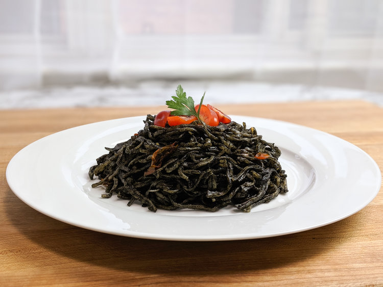

Spaghetti al Nero

Description
"A tangy dish of thin noodles tossed with squid ink and blood tomato sauce that has the unfortunate side effect of turning your teeth jet black." - Eorzean Database
- Prep time: 30 minutes
- Cook time: 15 minutes
- Dough resting time: 30 minutes
- Yields 2 servings
Ingredients
Fresh Pasta
- 3.5 oz (100 g) 00 Italian flour
- 3.5 oz (100 g) semolina durum flour
- 1 egg
- 1 tbsp (15 mL) olive oil
- 1.45 oz (43 mL) water
- 1 tsp (6 g) salt
Squid Ink Tomato Sauce
- 1 tbsp (15 mL) olive oil
- 2 garlic cloves, crushed
- 6.5 oz (180 g) tomato, sliced
- 1 oz (30 g) tomato paste
- 1/4 cup (55 mL) white wine
- 2 tsp (10 g) squid ink
- salt (to taste)
- pepper (to taste)
- 2 sprigs parsley
Steps
Fresh Pasta
- Put all the ingredients in a bowl and mix until fully combined.
- Knead for 2 minutes in a mixer, or by hand until the dough is smooth.
- Shape the dough into a ball, cover with plastic, and let it rest for 30 minutes.
- Cut the dough into 4 equal pieces.
- Flatten the dough, roll it ou, and shape it into a rectangle.
- Roll out the dough using a pasta roller, or rolling pin to your desired thickness.
- Sprinkle the dough sheets with flour, cut into noodles, and then toss with flour.
- Cover the pasta with plastic and set it aside.
Note: If you're using dry pasta, cook enough for 2 portions for 1 minute less than the package directions.
Squid Ink Tomato Sauce
- Set aside one-third of the tomatoes to garnish later.
- Bring a pot of salted water to a boil while preparing the sauce.
- In a pan over medium-low heat, cook the garlic in the olive oil until fragrant.
- Add two-thirds of the tomatoes to the pan and cook until they start releasing their liquid.
- Add the tomato paste and stir to incorporate.
- Add the wine and let it cook and reduce until the sauce starts getting thick.
- Cook the pasta for 1 to 2 minutes.
- Add the squid ink to the sauce and stir until it is fully incorporated.
- If the sauce becomes too thick, add a splash of wine. If the sauce becomes too thin, add 1 to 2 tbsp of cold butter and stir to emulsify.
- Add the cooked pasta to the pan and toss to coat.
- Taste and season with salt and pepper to your preference.
- Serve the pasta and garnish with fresh tomatoes and parsley.
Note: Try fish broth as a substitution for squid ink if you're not able to find it. It won't yield the same color, but the flavor will be similar. You can always use food coloring to achieve the iconic black color.
Recipe from "A Recipe Reborn."
Return to main page.
Start of page.